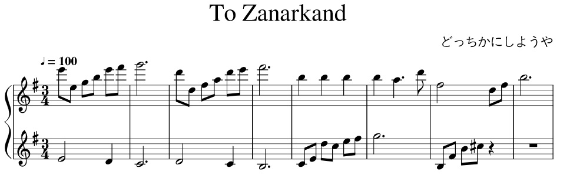

I have provided examples of what I do under the Examples tab. Please! Take a look!
For The Longest Fall, I recently discovered a way to play midi on the Blob Opera web app and used a meme song within the FFXIV community.
Here's the actual song: The Primals: A Long Fall
The meme: Dream Feet
(For those of you curious, yes you actually hear this in-game in the Twinning dungeon. It's a remixed version of an older dungeon bgm.)
To Zanarkand (from Final Fantasy X) is a beloved song within the Final Fantasy Community. I took a pre-existing midi file I've found online and turned it from a duet into a quintet. The cello and violin lines were inspired by Trifantasy Trio and I added the contrabass part myself to get the deep bass notes I wanted for this song.
POP QUIZ!!! What key is this song in? Em
Melodies of Life (from Final Fantasy IX) was a request from a friend of mine, so I put it together for him. In the video itself, my brother and I set up at a fairly populated city so that other players can take a break from their grind and chillax.